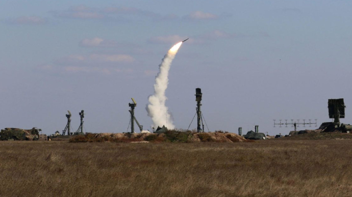

Минулої доби ЗСУ відвоювали понад 20 населених пунктів – зведення
ОЛЬГА ГЛУЩЕНКО - ПОНЕДІЛОК, 12 ВЕРЕСНЯ 2022, 07:12
- на Сіверському напрямку біля Кондратівки Сумської області;
- на Харківському напрямку – населених пунктів Костянтинівка, Уди;
- на Слов'янському напрямі противник обстрілів не вів;
- на Слов'янському напрямі противник обстрілів не вів; на Краматорському напрямку – у районах населених пунктів Тетянівка, Донецьке, Райгородок, Крива Лука, Верхньокам'яне та Спірне; на Бахмутському напрямку – у районах населених пунктів Веселе, Яківств
- на Бахмутському напрямку – у районах населених пунктів Веселе, Яківство, Соледар, Бахмутське, Бахмут, Миколаївка Друга, Зайцеве;
- на Бахмутському напрямку – у районах населених пунктів Веселе, Яківство, Соледар, Бахмутське, Бахмут, Миколаївка Друга, Зайцеве;
на Авдіївському напрямку обстрілу зазнали Карлівка, Водяне, Першотравневе, Красногорівка, Мар'їнка та Новомихайлівка;
- на Новопавлівському напрямку – вогнева активність у районах Пречистівки, Великих Новосілок, Богоявленки, Ненудного та Микільського;
- на Сіверському напрямку біля Кондратівки Сумської області;
- на Харківському напрямку – населених пунктів Костянтинівка, Уди;
- на Слов'янському напрямі противник обстрілів не вів;
- на Слов'янському напрямі противник обстрілів не вів;
- на Новопавлівському напрямку – вогнева активність у районах Пречистівки, Великих Новосілок, Богоявленки, Ненудного та Микільського; на Запорізькому напрямку – біля Новосілки, Времівки, Новополя, Новоандріївки, Полтавки, Гуляйполя та Залізничного;
- на Південнобузькому напрямку обстрілу зазнали райони населених пунктів Нововознесенське, Біла Криниця, Осокорівка, Велике Артакове, Сухий Ставок, Костромка, Партизанське, Безіменне, Благодативка, Іванівка, Зарічне, Білогірка та Мирне.
- на Новопавлівському напрямку – вогнева активність у районах Пречистівки, Великих Новосілок, Богоявленки, Ненудного та Микільського;

На Південнобузькому напрямку обстрілу зазнали райони населених пунктів Нововознесенське, Біла Криниця, Осокорівка, Велике Артакове, Сухий Ставок, Костромка, Партизанське, Безіменне, Благодативка, Іванівка, Зарічне, Білогірка та Мирне. Сили оборони відбили атаки противника неподалік Майорська та Красногорівки. У районах Миколаївки Другої та Зайцевої бої продовжуються.